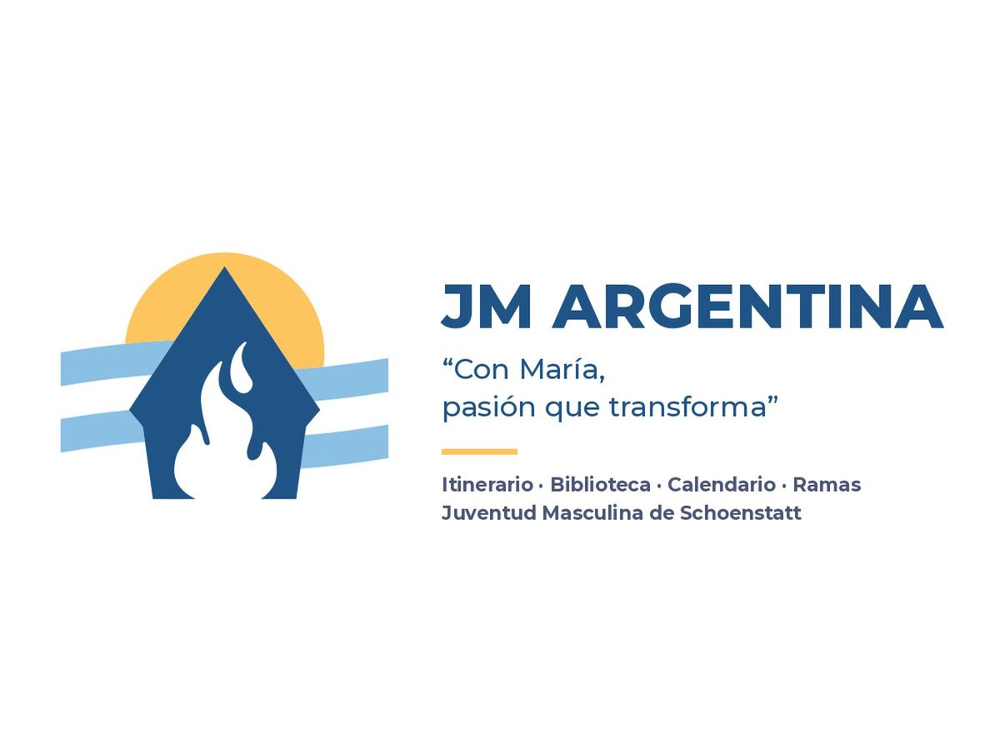

01
Plataforma académica pública
La Cueva del Economista
Plataforma pública que recopila y visualiza la historia económica argentina desde 1880 hasta hoy, con datos actualizados vía APIs y análisis econométrico en el navegador.
Economista argentino
Me interesa entender la Argentina: su historia económica y su matriz productiva —agro, energía, minería— y acercarle el financiamiento del mercado de capitales.
Disponible · Córdoba
01 — Intereses
Me apasiona la historia económica argentina y conocer a fondo su matriz productiva: el agro, la energía y la minería. Ahí veo dónde el mercado de capitales puede financiar a la economía real.
Busco hacer un aporte sincero y concreto a la Argentina.
02 — Mercado de capitales
Hoy soy analista de inversiones en el equipo de Gonzalo Gómez Pizarro, agente productor: seguimiento de carteras, propuestas personalizadas e informes de acciones, bonos, CEDEARs y ETFs.
Antes, pasante en Argentina Valores S.A., con rotación por back-office, mesa de operaciones, comercial y tesorería. La inteligencia artificial es mi herramienta central de trabajo.
03 — Formación
Solo me queda el trabajo final de la Licenciatura en Economía: una investigación sobre el riesgo país argentino. En paralelo curso el Postgrado en Agronegocios de AgroEducación.
Portfolio and Risk Management (Universidad de Ginebra), Redes Neuronales en FAMAF y Analista Global de Inversiones.
04 — Liderazgo
Jefe de Rama de la Juventud Masculina de Schoenstatt desde 2025. Organizo las actividades anuales, armo equipos para campamentos, retiros y misiones, y coordino con jefes de otras regiones.
Dirigente de grupo desde 2022 y miembro del consejo entre 2022 y 2024.
05 — Proyectos
Proyectos en curso
Tocá uno para ir a su ficha
Experiencia, formación y comunidad.
Experiencia
Nov. 2025 — hoy
Analista de Inversiones · Equipo de Gonzalo Gómez Pizarro, Agente Productor
Seguimiento de carteras, propuestas personalizadas, informes por activo y screening, automatización con Python, Excel e IA.
Ago. 2024 — Nov. 2025
Pasante · Argentina Valores S.A.
Rotación por back-office, mesa de operaciones, comercial y tesorería; planillas y código Python para agilizar procesos.
Verano 2023
Rental – Retail Associate · Vail Resorts, Denver
Atención al cliente y ventas en inglés.
Formación
2021 — hoy
Licenciatura en Economía · Universidad Nacional de Córdoba
Trabajo final en curso: riesgo país argentino.
Sept. 2026 — hoy
Curso de Postgrado en Agronegocios · AgroEducación
Oct. 2026
Portfolio and Risk Management · Coursera – Universidad de Ginebra
2023
Redes Neuronales · FAMAF, UNC
Alumno vocacional. Nota: 10 (diez).
2020
Analista Global de Inversiones · Instituto de Capacitación Bursátil
Bachiller en Economía y Administración, Instituto María de Nazareth — abanderado provincial.
Comunidad
2022 — hoy
Juventud Masculina de Schoenstatt
Jefe de Rama (2025 — hoy), miembro del consejo (2022 — 2024) y dirigente de grupo (2022 — hoy).
IdiomasInglés avanzado · First Certificate Exam
HerramientasPython (Pandas), R, Excel, Google Sheets · diseño de agentes y flujos con IA generativa
HabilidadesAnálisis de inversiones y carteras · liderazgo de equipos · vínculo con clientes
Lo que construyo en paralelo al trabajo.
01
Plataforma académica pública
Plataforma pública que recopila y visualiza la historia económica argentina desde 1880 hasta hoy, con datos actualizados vía APIs y análisis econométrico en el navegador.
02
Mercado de capitales
03
Agro · En desarrollo
Simulador de coberturas para productores agropecuarios
Simulador de coberturas con futuros y opciones para productores agropecuarios: muestra cuánto cobran por hectárea con cada estrategia si el precio cae o sube a cosecha.
Estrategias Agro es una app web que armé para mostrarles a productores de soja, maíz y trigo cómo funcionan las coberturas con futuros y opciones. Traduce cada estrategia a lo que el productor mira: cuánto cobra por hectárea, en dólares y en quintales, si a cosecha el precio cae o sube.
Tiene cinco estrategias base (venta de futuro, compra de put, collar costo cero, put spread y futuro + call), un armador para combinar futuros, puts y calls con primas teóricas Black-76, una pestaña de mercado, estadísticas por cultivo y ganadería con su fuente, y una sección para aprender el modelo.
La uso desde la tablet en foros y encuentros del sector: tiene un modo foco a pantalla completa y un QR para que el productor la abra en su celular. Es instalable y funciona sin señal.
La hago porque la mayoría de los productores no usa estos instrumentos: les parecen complicados y lejanos. Como asesor financiero quiero acercarlos al mercado de capitales con números concretos y simples.
Destacados
04
Mercado de capitales · En producción
Página web gratuita para preparar el examen de idoneidad de la CNV: las leyes y las Normas con su texto literal, 942 preguntas de práctica y el mapa del mercado. Para quienes rinden el examen.
Construí una página web gratuita para preparar el examen de idoneidad de la Comisión Nacional de Valores. Reúne las ocho leyes de la bibliografía y las Normas CNV vigentes, con la estructura de cada una y el texto literal de cada artículo, más un glosario con las definiciones que dan las propias normas.
Para practicar tiene un cuestionario de 942 preguntas con corrección inmediata, simulacros con la cantidad y el tiempo del examen real e historial de resultados, y una sesión diaria de micro-learning con tarjetas y repetición espaciada. La sección El mercado muestra quién es quién: qué puede hacer cada agente y quién emite, negocia, custodia y controla cada instrumento.
Cada dato lleva su fuente y remite al artículo que lo respalda. Se usa sin cuenta; quien se registra guarda su progreso entre dispositivos. Un tutor responde consultas en lenguaje natural y cita artículos que la página verifica.
Lo armo mientras preparo mi propio examen, para ordenar la bibliografía y dejarla abierta a quienes rinden. No es material oficial de la CNV ni cuenta con su aval: ante cualquier duda, manda el texto legal.
Destacados
05
Comunidad · En producción
Plataforma formativa de la JM Argentina
Una plataforma web abierta que reúne el itinerario formativo, el material y la historia de la Juventud Masculina de Schoenstatt Argentina, pensada para dirigentes de grupo de vida.
La Biblioteca JM es la plataforma formativa de la Juventud Masculina de Schoenstatt Argentina. Junta en un solo sitio el itinerario del grupo de vida, una biblioteca con el material ordenado, cuadernos de NotebookLM por tema, la historia de la JM, un calendario de eventos y un mapa de ramas y santuarios.
El itinerario está en el centro: se lee completo y tiene al costado un diagnóstico con preguntas cerradas que ubica al grupo en una de sus cuatro etapas y recomienda material. Un asistente en forma de chat, disponible en todas las páginas, sugiere material a partir de preguntas guiadas o texto libre.
La biblioteca reúne lo que estaba repartido en varias bibliotecas y carpetas de Drive, sin archivos repetidos, con un índice jerárquico y buscador. Se puede usar sin registrarse; el ingreso con Google se usa para que los jefes de rama publiquen eventos y completen la ficha de su rama, y para proponer material o hitos.
La armé porque el material y la vida de la JM estaban repartidos en carpetas, cuadernos y en la memoria de cada rama. La idea es que cualquier dirigente pueda responder rápido qué necesita hoy su grupo de vida, con una misma base formativa para todo el país.
Destacados

06
Productividad · En producción
Guerrero Dragón
Una app web instalable en la que organizo mi rutina, lo concreto de cada semana y mis objetivos de largo plazo, sincronizada entre la computadora y el celular.
Jarvis es mi tablero personal de organización. Junta en un solo lugar la rutina, las actividades de la semana, los objetivos semanales y los objetivos de largo plazo, ordenados por área, sección y subsección.
Funciona por capas: la Rutina guarda la estructura que se repite; la Semana permite mover o agregar actividades solo para esos siete días sin tocar la rutina; Mi día muestra qué toca ahora, qué sigue y el progreso de la jornada. Los objetivos semanales cuelgan del mismo árbol de áreas que los de largo plazo.
Es una app web instalable en el celular. Cada persona entra con su cuenta de Google y sus datos se sincronizan entre aparatos; las cuentas nuevas arrancan en blanco. Las actividades marcadas con la campanita avisan en el celular aunque la app esté cerrada.
La empecé para tener a mano mis responsabilidades, proyectos y metas, y dejar de depender de planillas sueltas. La idea a largo plazo es que funcione como un asistente que conozca mi agenda, me avise y me ayude a cumplirla.
Destacados
07
Economía · En desarrollo
Economía de a poco
Una app web de microlearning en economía: cada día un brief de unos 15 minutos sobre un paper o un tema, con preguntas de control, repaso espaciado y rutas de lectura ordenadas por área.
Prebisch es una app para seguir estudiando economía de a poco. Cada día propone un brief que explica un paper, un capítulo o un tema desde cero: la idea central, el mecanismo, el modelo y el trabajo empírico detrás, con la cita completa de la fuente.
Detrás hay un rack de 484 lecturas clasificadas en 12 áreas y 49 categorías, con rutas que van de los manuales y clásicos a la cursada, los complementarios y la investigación. Cada brief trae 8 preguntas de control y de 6 a 8 tarjetas que, después de leerlo, entran a un repaso espaciado por cajas de Leitner (1, 3, 7, 16, 35 y 90 días).
En Mi estudio cada persona puede cargar sus propios PDF, contar qué quiere aprender y la app arma una ruta con un brief por día generado con IA: con el servidor de la app y un cupo diario, o con su propia key de Gemini o de Anthropic. Los PDF se leen en el navegador y no se suben. Se puede usar sin cuenta o entrar para sincronizar el progreso.
La empecé porque todos los días me llegan papers de economía por mail y no tengo tiempo de leerlos enteros. Me inspiré en la sección de microlearning de mi proyecto del examen de idoneidad para ordenar los papers que llegan y las lecturas de la facultad, y repasarlos de forma organizada.
Destacados
08
Economía real · En desarrollo
Un mapa interactivo de los tres grandes sectores productivos de Argentina —Oil & Gas, minería y agro— con sus activos, las empresas detrás de cada uno y estadísticas, citando la fuente de cada dato.
Matriz Productiva Argentina es una plataforma que muestra cómo funcionan el Oil & Gas, la minería y el agro/ganadería en el país: dónde están los pozos, refinerías, ductos, minas, plantas de molienda, puertos y frigoríficos, quién los opera y cuánto producen.
El eje es un mapa con capas por cadena productiva y por estado (en operación, en construcción, proyecto). Al tocar un activo se abre su ficha con resumen, cómo funciona el proceso, empresas y fuentes. Se completa con una tabla, un directorio de empresas con cotizaciones y una sección de estadísticas sectoriales.
Los datos salen de portales oficiales (Secretaría de Energía, Secretaría de Minería/SIACAM, MAGyP, INDEC) y de informes de la Bolsa de Comercio de Rosario y notas de prensa. Una actualización automática corre todos los meses; lo que no tiene una fuente con formato estable se carga a mano, siempre con su cita.
Lo hago para tener una vista ordenada de la economía real argentina y para investigar las empresas de estos sectores como posibles inversiones en bolsa: sus proyectos, dónde están y qué proyecciones públicas tienen.
Destacados